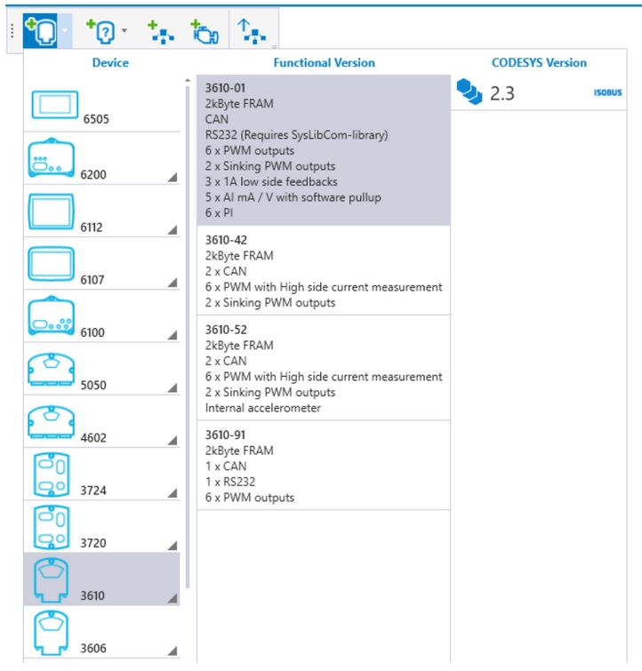
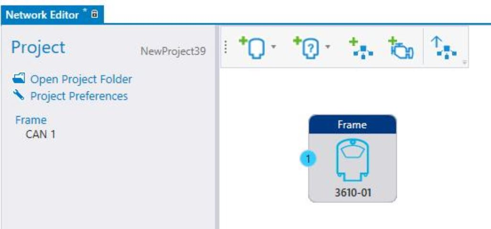
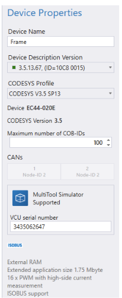
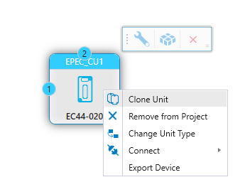
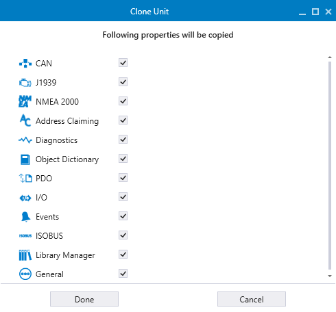
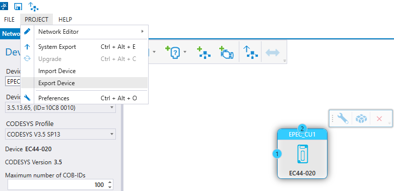
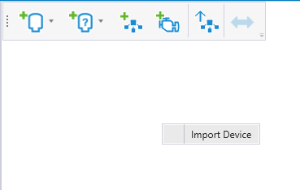

This topic describes adding, editing, deleting, and cloning functions of devices.
1. Click Add Device on the Network Editor.

2. Select the Device type, correct Functional Version and CODESYS Version.
The Functional Version is used to differentiate hardware subversions of main device types. The functional version is found after the dash from the device product code, for example, E30B3606-21.
The icon indicates that the device supports Epec's Remote Management service GlobE.
Safety devices are identified by a yellow striped background.
3. The added device appears in the Network Editor.

4. Selecting the device opens the Device Properties on the left:

The Device Properties are described in the following table:
|
Property |
Description |
|
Device Name |
Name of the device. By default, MultiTool Creator names the devices, for example, as Epec_CU1 and Epec_CU2. However, it is recommended to update the default name into a more descriptive and unique name.
Once the Create CODESYS Project has been done, it is not recommended to change the Device Name. Renaming will create a new directory to which any user specific application code is not transferred. For example,
|
|
Device Description Version |
This information is available only for CODESYS 3.5 programmable devices. Device description files
|
|
CODESYS Profile |
This information is available only for CODESYS 3.5 programmable devices. Select a CODESYS 3.5 profile which will be used when a CODESYS project is created.
|
|
Device |
Hardware version of the selected device |
|
CODESYS Version |
Shows the CODESYS version (2.3 / 3.5). Changing the CODESYS version is possible only via adding a new device and selecting the correct CODESYS version from Add Device menu > Device > Functional Version > CODESYS Version.
|
|
Maximum number of COB-IDs |
The maximum number of message IDs received from each CANbus. |
|
CANs |
Shows the CAN channels and their node-IDs.
|
|
MultiTool Simulator Supported |
This is shown in the panel if the device is supported in MultiTool Simulator.
|
5. Connect device(s) to a network, for more information see section Adding, Editing and Deleting Network.
To change the Device Properties, select the device by clicking and make the changes to
Device Name (not recommended once the Create CODESYS Project has been done)
Device Description Version
CODESYS 3.5 Profile
The functional or CODESYS versions are not editable in the Device Properties. To change either one of them, a new device with correct settings has to be added to the project.
To delete the device:
Right-click on the device and select Remove from Project or
Click on the device and select Delete icon or
Click on the device and press Delete from keyboard
A dialog opens. Select Yes to confirm deleting.
Right-click on the device and select Clone Unit or
Click on the device and press Ctrl+C and then Ctrl+V

The Clone Unit window opens.
By default, all properties are selected to be copied. These are represented with checked boxes, which will be shown by corresponding configuration views for the device.
To remove properties from being copied, uncheck their boxes. For example, to only copy I/O configuration and PDO messages, unselect all other properties by unchecking their boxes, but leave I/O and PDO boxes checked in the Clone Unit window.

|
|
For slave and J1939 devices, this option is not available. The Clone Unit window does not open. |
Initate the cloning process by selecting Done.
The device is cloned, and the clone is connected to the same network as the original device.
1. Click on the device and press Ctrl+C and then navigate to the Network Editor of the other project and press Ctrl+V
(or)
Export the device as an XML file, by either
Right-clicking on the device and selecting Export Device or
Selecting PROJECT > Export Device from the menu
Select the location to save the file, in the File Explorer window.

|
The file name must use the XML extension. |
2. Open the other project and import the the exported unit to the project.
Import the device to the project, by either
Right-clicking the Network Editor and selecting Import Device or
Selecting PROJECT > Import Device
Select the exported XML file from the File Explorer window.

3. When the cloned device is added to another project, The Clone Unit window opens.
By default, all properties are selected to be copied. These are represented with checked boxes, which will be shown by corresponding configuration views for the device in the new project.
To remove properties from being copied, uncheck their boxes. For example, to only copy I/O configuration and PDO messages, unselect all other properties by unchecking their boxes, but leave I/O and PDO boxes checked in the Clone Unit window.
|
|
For slave and J1939 devices, this option is not available. The Clone Unit window does not open. |
Initate the cloning process by selecting Done.
Epec Oy reserves all rights for improvements without prior notice.
Source file 6_3_Add_Module.htm
Last updated 25-Jun-2025